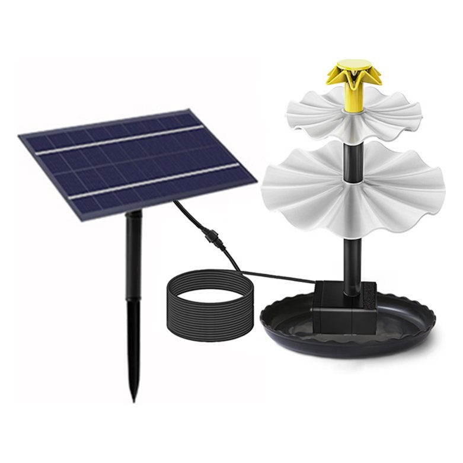
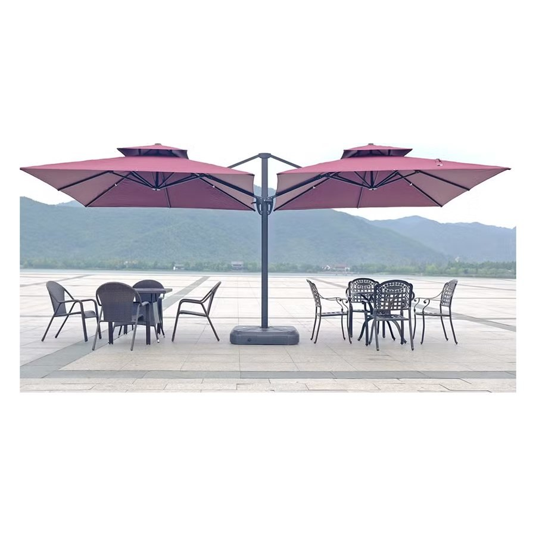

Start / Garten, Balkon & Camping / Wurfzelt / Pop-up-Zelt für 2–3 Personen (Selbstaufbau, Glasfaser-Rahmen, wasserdicht, Tragetasche)

Garten, Balkon & Camping
Wurfzelt / Pop-up-Zelt für 2–3 Personen (Selbstaufbau, Glasfaser-Rahmen, wasserdicht, Tragetasche)
Wurfzelte sind die klassische Lösung für Festival, Strand und Kurztrip, wenn Schnelligkeit und geringes Gewicht wichtiger sind als Wetterfestigkeit bei Dauerregen.
Technische Daten
| Maße | 210 × 120 × 110 cm (Bodenfläche ca.; 2,5 m²) |
|---|---|
| Gewebe | 190T Polyester, UV-Schutz |
| Gestänge | flexible Glasfaserstangen, selbstaufspannend |
| Gewicht | 3,5 kg |
| Zolltarifnummer (HS) | 63062200 |
EU-Normen und Vorschriften
EN ISO 5912Campingzelte: Anforderungen und PrüfverfahrenEN 20811 / ISO 811Wasserdichtheit von Textilien: Prüfung des hydrostatischen Drucks (Wassersäule)REACH (EC) 1907/2006Anhang XVII: u.; a.; PFHxA-Beschränkung für Textilien (VO (EU) 2024/2462, ab 10.10.2026), AzofarbstoffeGPSR (EU) 2023/988Produktsicherheit, EU-Verantwortlicher, Rückverfolgbarkeit
Passt dazu
Faltbarer Campingstuhl (Stahlrahmen, 600D-Oxford-Gewebe, Getränkehalter, Seitentasche)Robuster Klappstuhl mit Stahlrohrrahmen, gepolstertem Oxford-Sitz und Getränkehalter, packbar im schlanken Karton von nur 19 × 19 × 97 cm.
Wiederaufladbare LED-Campinglaterne (USB-C, Akku, dimmbar, aufhängbar)Akku-LED-Laterne im Retro-Design mit USB-C-Ladung und stufenloser Dimmung für Zelt, Terrasse und Gartentisch.
Camping-Hängematte doppelt (Fallschirmnylon, Baumgurte und Karabiner, Packsack)Ultraleichte Doppelhängematte aus Fallschirmnylon mit Baumgurten, Karabinern und Packsack: in Sekunden aufgehängt, klein verpackt.
Weitere Produkte dieser Kategorie
Flexibler Gartenschlauch, dehnbar, 15–22,5 m, mit Kupplungen und 7-Funktions-BrauseDehnbarer Textil-Gartenschlauch, der sich unter Wasserdruck auf etwa das Dreifache streckt, danach wieder zusammenzieht und mit Kupplungen und Handbrause geliefert wird.

Solar-Springbrunnenpumpe / Solar-Teichpumpe (Set mit Solarpanel und Düsenaufsätzen, ca. 180 l/h)Solar-Direktset ohne Akku: Panel und bürstenlose Tauchpumpe für Vogelbad, Teich oder Zierbrunnen.

Frame-Pool-Set rund Ø 366 × 76 cm (Stahlrahmen, PVC-Verbundplane, Kartuschenfilter)Rundes Aufstellpool-Set (12 ft × 30 in) mit Stahlrohrrahmen, mehrlagiger PVC-Plane und Kartuschen-Filterpumpe, ohne Werkzeug aufbaubar.
Hochbeet aus verzinktem Stahl, bodenlos (Garten 240 × 80 × 82 cm, Balkon-Variante 100 × 40 × 77 cm)Bodenloses Beetmodul aus verzinktem bzw. Aluzink-beschichtetem Stahlblech: wetterfest, rostgeschützt und ohne Spezialwerkzeug montierbar.
Grillbesteck- und Grillzubehör-Set Edelstahl, 18-teilig im Alukoffer
Faltpavillon 3 × 3 m (Stahl- oder Alu-Gestell, Polyester, UV 50+, 4 Seitenwände, Tragetasche, Sandsäcke)Pop-up-Pavillon 3 × 3 m mit Scherengestell, wasserabweisendem Polyesterdach (UV 50+) und optionalen Seitenwänden: in Minuten aufgebaut.
Terrakotta-Blumentopf, gebrannter TonKlassischer Blumentopf aus gebranntem Ton mit Abzugsloch.

Schwenkregner / Viereckregner für den RasenKunststoff-Viereckregner mit verstellbarer Reichweite für Rasenflächen.
Bistro-Set Metall klappbar, 3-teiligPlatzsparendes Balkon-Set aus Stahl mit Tisch und zwei Stühlen.

Ampelschirm / Sonnenschirm 3 m, Alu-GestellAmpelschirm mit Kurbel, Aluminiumgestell und UV-Schutzbespannung.
Mumienschlafsack Polyester, 3 JahreszeitenLeichter Mumienschlafsack mit Kapuze und Packsack.
Camping-Gaskocher, tragbar (Butan/Kartusche)Einflammiger Campingkocher für Gaskartuschen im Tragekoffer.

Faltbarer Bollerwagen / GartenwagenZusammenklappbarer Handwagen für Garten, Strand und Camping.
Camping-Lichterkette LED, 10 m, USB-C wiederaufladbarAkku-Lichterkette für Zelt, Terrasse und Garten.